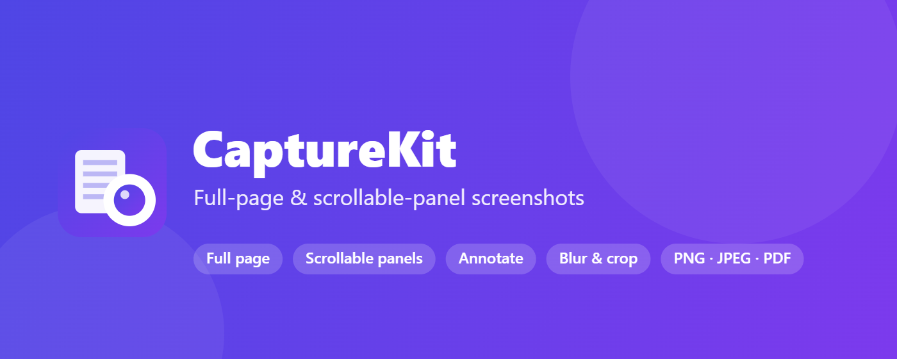
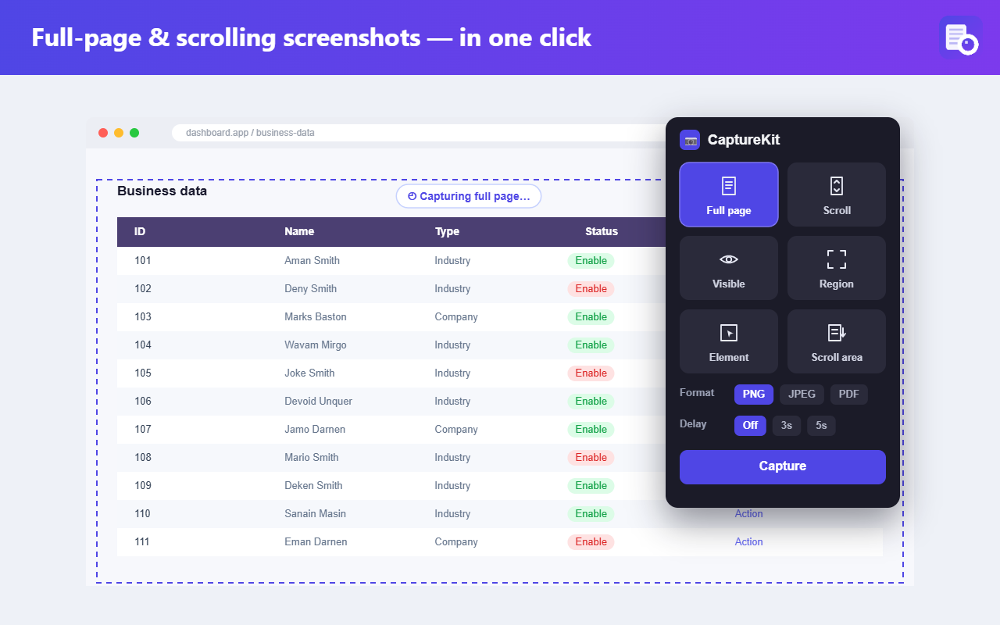
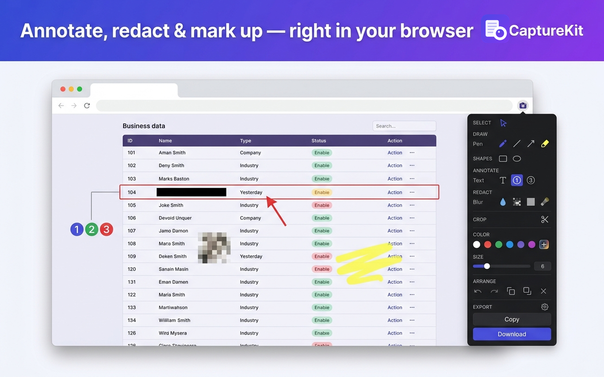
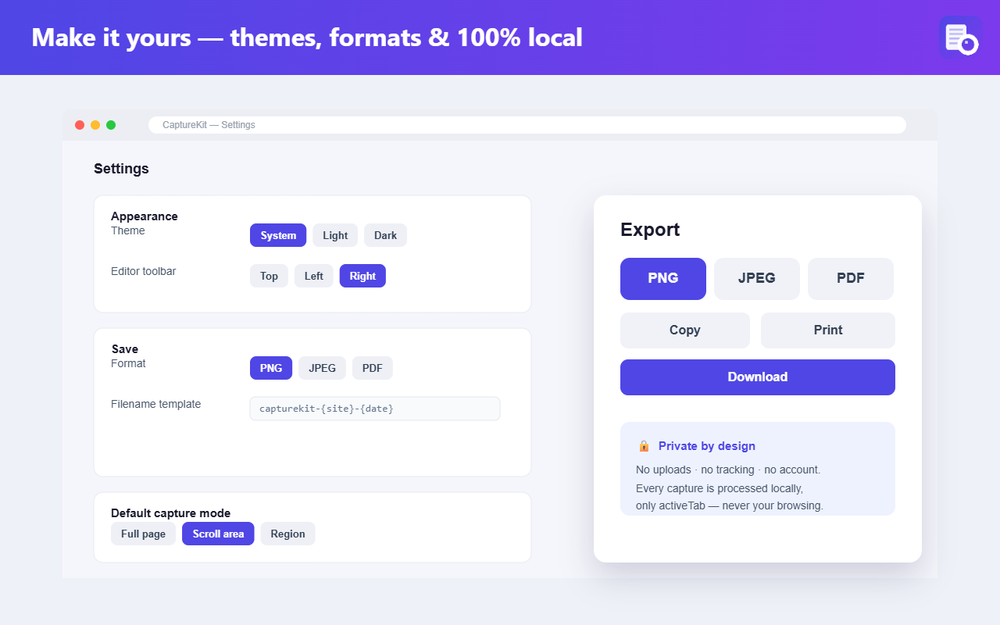
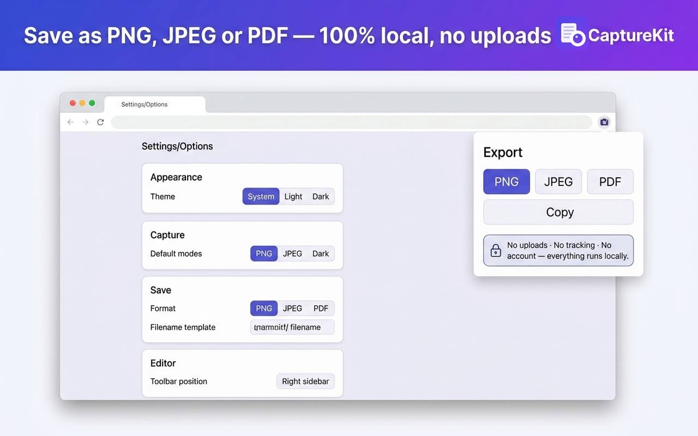
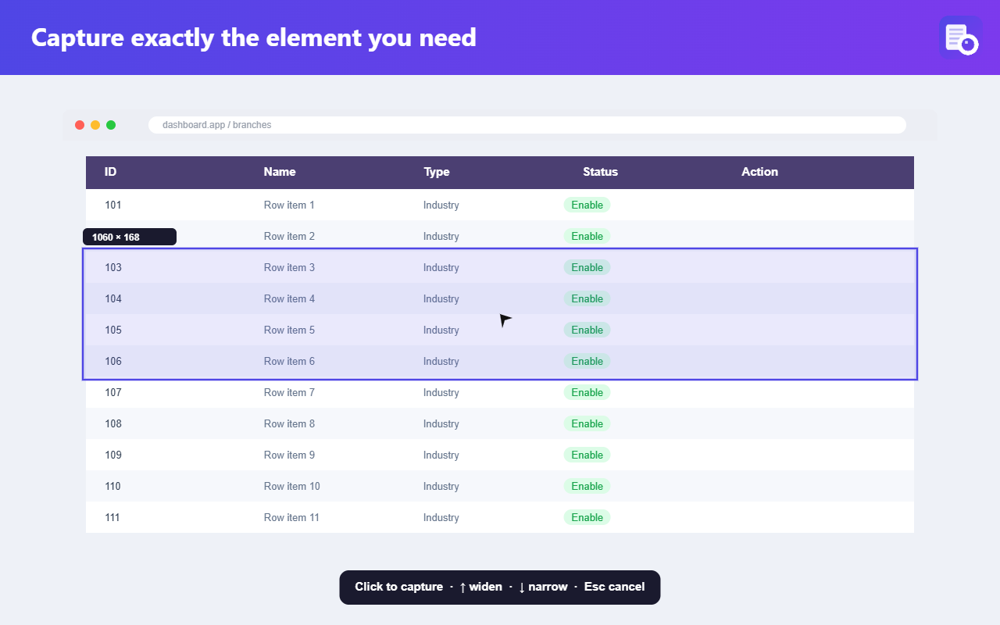
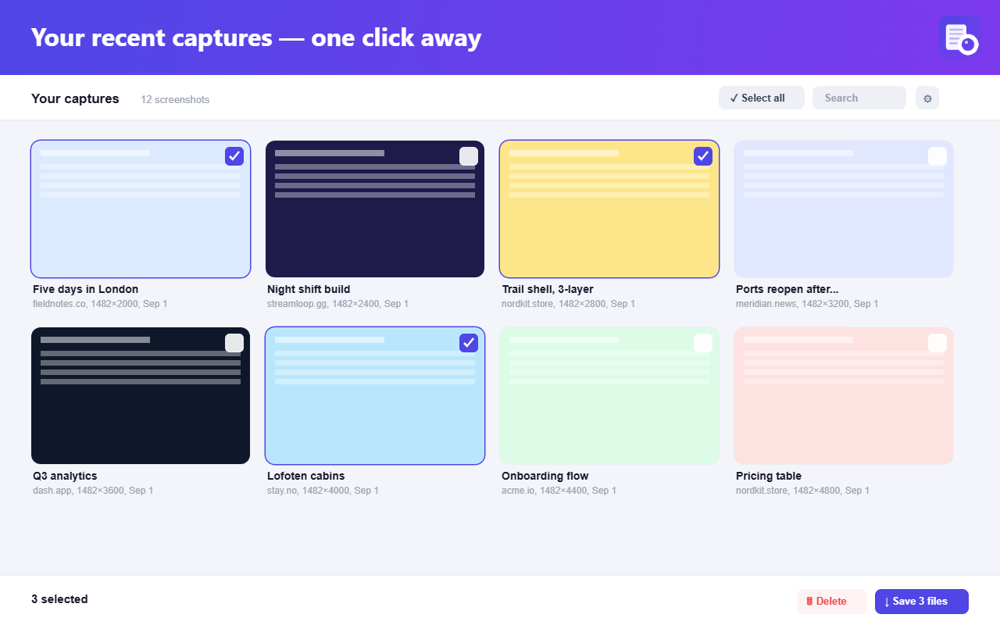
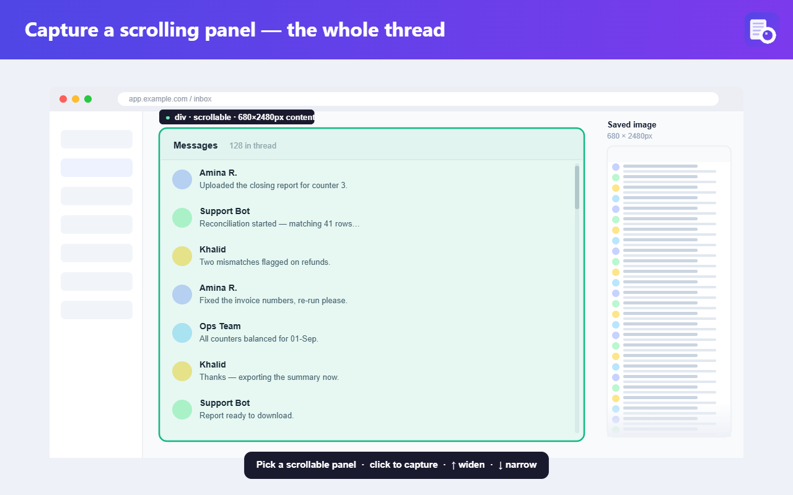

Capture entire web pages — full page, scroll, region, or element picker — then annotate with pro tools and export as PNG, JPEG, or PDF. Every PNG comes back editable when you drop it in again.

Seven screens from the real extension. Click through to see capture, annotate, options, privacy, element picker, history, and scrolling capture.







Popup: pick a capture mode (full page, scroll, visible, region, element, scroll area).
Capture, annotate, and hand off — without leaving your browser or your privacy.
Full page, scroll region, visible area, drawn box, element picker, scrollable inner containers, timer.
Pen, arrows, shapes, callouts, text with pill/outline, step markers, stamps, blur, pixelate, redact, spotlight.
Marquee, shift-click, group move, align, distribute, snap guides, lock/hide, z-order.
Save any tool's exact look — color, size, opacity, dash, heads — as a named preset for one-click reuse.
Free, 1:1, 4:3, 16:9, 9:16, Twitter card, OG card, LinkedIn — enforced to the pixel on export.
Every PNG carries your shapes as compressed metadata. Drop it back in later and every shape is editable again.
Copy image, copy data/blob URL, native share sheet, Reopen (drop, pick, or paste), Copy path after download.
Copy Slack-ready markdown or save to your own Google Drive. Off by default; each service is a separate toggle.
Pin the extension, pick a mode (or hit the keyboard shortcut), get your image in seconds.
Draw, redact, add callouts, drop step markers, blur sensitive bits. Undo/redo everything.
Aspect ratio presets for social platforms. Style presets for consistent look across captures.
Download PNG/JPEG/PDF, copy to clipboard, share, or save to Drive. Your call, every time.
No accounts. No sign-in. No analytics, no telemetry, no fingerprinting. Captures live in your browser, not on our servers — because we don't have any.
Optional sharing services (Slack, Google Drive) are off until you turn them on, and each is a separate toggle with a plain-English privacy note. Turn the master switch off and nothing reaches the network.
Yes. No paid tier, no ads, no upsells. It's built by one developer who wanted a better full-page screenshot tool and shipped it.
No. There's no server on our side. Everything happens in your browser. Files leave your device only if you download them, copy them, or explicitly enable and click a sharing service (Google Drive uploads to your account, not ours).
Every PNG CaptureKit exports carries a compressed metadata chunk with your shapes and base image. It looks like a normal PNG to every other tool. But if you drop it back into CaptureKit later, the whole annotation session comes back editable — pen strokes, text, callouts, everything. JPEG and PDF exports are flat.
It uses Chrome's built-in Google sign-in with the drive.file scope — the most restrictive Drive scope. CaptureKit can only see files it creates itself, never your other Drive contents. The scope, the sign-in, and the upload are all opt-in.
Chrome and Chromium-based browsers (Edge, Brave, Opera) via the Chrome Web Store. Firefox port is on the v1.7 roadmap.
Yes — email araza5193@gmail.com with the reproduction steps, extension version, and browser version.
Free, no account, works in seconds.
Add to Chrome — it's free